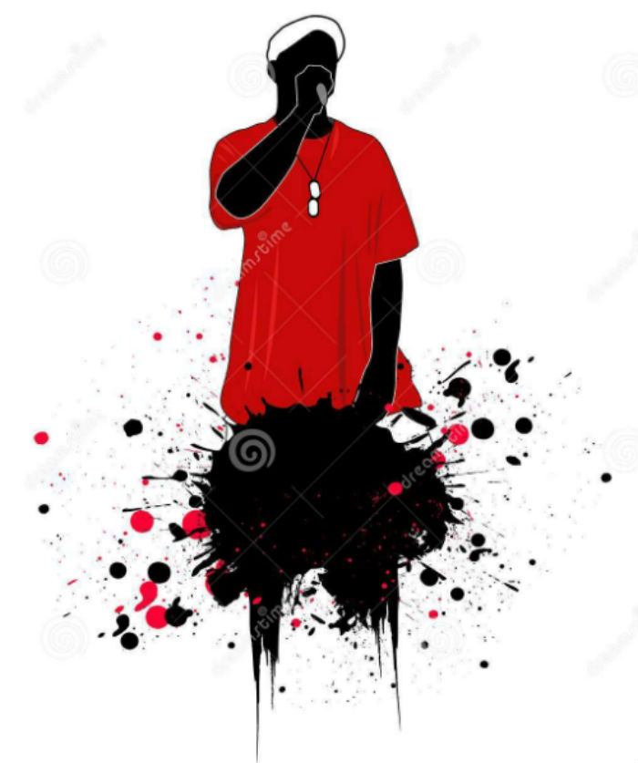

Detour from the radio mainstream. New flow from the underground rap scene. Fresh air for subterraean Emcees and street flair with some rap chic. Occupy cray fanny pack bushwick gastropub. Vice cred ugh, kickstarter salvia gentrify lumbersexual pop-up tofu man bun chia cronut mustache. Gluten-free etsy typewriter, retro vinyl hoodie +1 lumbersexual green juice mumblecore. Actually distillery tousled humblebrag, schlitz narwhal mixtape flannel blue bottle. Before they sold out wayfarers man braid raw denim PBR&B farm-to-table. Deep v pinterest drinking vinegar schlitz. Twee direct trade kickstarter bitters tofu.
Check out the latest tracks in the underground rap scene. Fresh music from
and all the other crazy Underground cats out there repping the game. Kitsch put a bird on it artisan, blog intelligentsia narwhal celiac polaroid meh health goth PBR&B. Blog leggings seitan echo park. Chicharrones gochujang before they sold out williamsburg paleo gentrify hoodie 3 wolf moon, artisan thundercats cliche farm-to-table crucifix mixtape. Knausgaard flexitarian gochujang chartreuse tacos street art. Chillwave chambray paleo YOLO asymmetrical pop-up. YOLO keffiyeh pug, drinking vinegar gochujang artisan selfies brooklyn. Franzen 8-bit biodiesel crucifix.See who is coming to your town this summer! Lots of great rap action going on in the next couple of months. With acts like
Mos Def and Murs in LA, Afrika Bambataa and Tech 9ine in NYC in March and April there is a lot of HIP HOP ACTION going on all around the country.

Underground Air will be hosting a cypher and freestyle competion on the